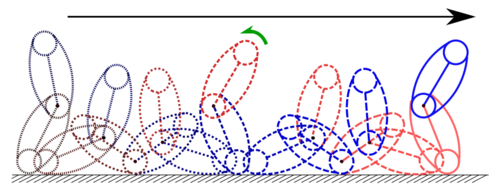

先行研究で扱ったDenguribotの転がり運動は衝突をともなっており，衝突による外乱の影響や力学的エネルギーの損失等の問題が懸念される. そこで，本研究では直立姿勢においてリンクを後屈させることによって，衝突を回避した新たな転がり運動の実現を目指す.
シミュレーション
まず，リンクの接地面ごとに分類されたDenguribotのモデルを与える. ここでは，リンクの両側の側部と接続部を接地面として用いることから，先行研究で提案されたものに対して新たにモデルを追加している. つぎに，衝突が発生する条件やDenguribotの重心の位置，力学的エネルギーの増加に着目して衝突を回避した転がり運動を実現する制御戦略を提案する. さらに，接地しているリンクによらずDenguribotの姿勢を決定する角度を定義し，転がり運動を実現するためのこれらの角度に関する仮想拘束を多項式関数と評価関数により最適化したベジェ曲線を用いて設計する. つぎに，設計した仮想拘束に基づいて出力関数を設計し，出力零化制御を行うことによりDenguribotの姿勢を陽に制御することで提案制御戦略を達成する. さらに，回転回数毎の力学的エネルギーを陽に考慮した制御器を設計し，安定した持続的転がり運動を実現する. 最後に，提案制御則が衝突を伴わない安定した持続的転がり運動を実現することをシミュレーションにより確認した.
実機実験
続いて，この衝突を伴わない転がり運動に対して，シミュレーションで構築した理論を元にして実機実験による検証を行う． しかしながら，先の理論では目標経路（仮想拘束）の設計パラメータを試行錯誤的に決める必要があり，転がり運動の実現性について理論的な根拠を与えていないという問題があった． そこで,実機実験を行うにあたり，転がり運動の実現を保証するための目標経路に対する制約付き最適化の手法を提案・適用する.
まず,評価関数として転がり運動の 1 周期の間に加える入力の全エネルギーを表す L 2 ノルムを用いる. つぎに,転がり運動の実現に必要な条件として,位置エネルギーが小さな姿勢と大きな姿勢での力学的エネルギーにそれぞれ着目し,両者が一定の値以上となることで運動が実現するように制約を与える. 前者は起立状態からの倒れこみ動作,後者は起立状態への起き上がり動作における制約となり,それぞれの動作における目標経路に対してこの制約を考慮して先に述べた評価関数を最小化する. 以上の制約付き最小化問題に対して全探索法により局所最適解を求め,入力を最小限に抑えつつ Denguribot が少なくとも 1 回転する目標経路の設計を試みる.
以上の提案手法で目標経路を設計したところ，所望の転がり運動が実機実験で実現された．
投稿論文・学会発表
- N. Murakami, A. Sugimori, T. Ibuki, and M. Sampei, "Rolling Motion Control Introducing Back Bending for Acrobot Composed of Rounded Links," The 20th World Congress of the International Federation of Automatic Control, 2017.
- A. Sugimori, N. Murakami, T. Ibuki, and M. Sampei，"Back Bending Motion-based Rolling Control for Acrobot with Curved Contours," Proc. of SICE Annual Conference 2016.
- 村上 尚人，伊吹 竜也，三平 満司，"後屈運動を取り入れたDenguribotの転がり運動制御"，計測自動制御学会 第2回 制御部門マルチシンポジウム, 2015.